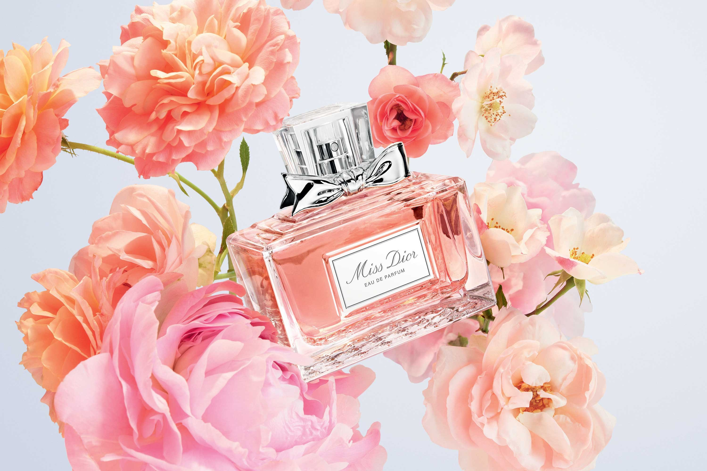

PERFUME
MissDior
&
Roseis
눈부시게 빛나는 꽃의 기운을 담은 미스 디올 향수를 경험해보세요.
SAVAUGE
소바쥬는 광활하게 펼쳐진 무한한 대지에서 영감을 받아 탄생했습니다. 강렬하고도 산뜻한 향이 거칠면서도 고급스러운 분위기를 표현합니다.
Dior
Homme
관능적인 우디 스파이시 향조의 시그니처 향기. 자유롭고 경쾌하면서도 세련된 기품을 지닌 남성을 위한 향수.
ROSE & ROSIES
"미스 디올 로즈 앤 로지스를 통해 단순한 장미꽃이 아닌 풍성하게 피어난 꽃의 생명력 그 자체를 표현하고 싶었습니다. 저는 어린 시절 꽃이 만개한 5월의 들판을 처음 봤을 때 느꼈던 강렬한 '자연'의 생명력을 향수로 표현하고 싶었습니다. 저에게 있어 장미는 그저 감탄을 자아내는 경이로운 존재입니다. 저는 꽃이 지닌 향기로움을 그대로를 최대한 담아내려고 노력했습니다."
프랑소와 드마쉬
디올 퍼퓨머-크리에이터
-
Parfum
IntensityMORE DETAIL미스 디올 블루밍 부케는 꽃으로 수 놓인 드레스처럼 아름답게 조향된 산뜻하고 빛나는 향기를 선사합니다. 이 향수는 크리스챤 디올의 꽃에 대한 애정 어린 열정에 경의를 표합니다. 향의 중심에는 베르가못의 싱그러운 향기로 돋보이는 피오니와 다마스크 로즈가 은은한 하모니를 선사하며 부드러운 화이트 머스크 노트의 레이스 장식이 서정적인 향기를 선사합니다. 유쾌하면서도 매력적인 미스 디올의 봄의 기운이 느껴지는 시그니처 플로럴 향수입니다.
-

Eau de parfum
IntensityMORE DETAIL
감각적인 그라스산 로즈와 생기 넘치는 로즈 우드가 섬세하게 어우러진 미스 디올 오 드 퍼퓸의 향기를 경험해 보세요. 리본처럼 싱그러운 칼라브리아산 베르가못이 탑 노트를 부드럽게 감싸줍니다. 향의 중심에 자리한 그라스산 로즈에 다마스크 로즈가 어우러져 대담한 아름다움을 드러냅니다. 향기에 특별함을 더하는 로즈 우드와 핑크 페퍼로 조화로운 향이 완성됩니다.
-
Eau de toilette
IntensityMORE DETAIL다채로운 꽃잎을 한 아름 품은 듯 싱그럽고, 시트러스 향을 품은 이슬처럼 활기찬 에너지를 담은 미스 디올 로즈 앤 로지스는 풍부한 그라스산 로즈에 베르가못 껍질과 강렬한 화이트 머스크 노트가 조화롭게 어우러진 눈 부신 향조의 플로럴 향수입니다. 생기 넘치는 제라늄 에센스의 레몬같이 상큼한 아로마가 끝없이 펼쳐진 꽃밭의 황홀한 향기를 완성합니다. 화사한 핑크빛으로 물든 이 향수는 거부할 수 없는 향기로 당신을 사로잡습니다.
SAUVAGE
프랑소와 드마쉬
디올 퍼퓨머-크리에이터
-
Parfum
IntensityMORE DETAIL극도로 상쾌한 노트가 따뜻한 오리엔탈 톤과 어우러지며 농도 깊은 강렬함을 남기는 소바쥬의 새로운 해석. 디올 퍼퓨머-크리에이터 프랑소와 드마쉬는 짙푸른 밤 하늘 아래 자연 그대로의 광활한 대지에서 영감을 받아 공중으로 불꽃이 타오르는 듯한 강렬한 향기를 구상했습니다. 황혼이 내려앉은 광활한 대지에서 펼쳐지는 마법같이 풍부하고 자극적인 자취를 남기는 새로운 향수입니다.
-
Eau de parfum
IntensityMORE DETAIL소바쥬의 강렬한 상쾌함을 담아 새로운 매혹과 신비로움을 드러내며, 탁월한 구성이 새로운 시그니처 향을 극대화시킵니다. 칼라브리아산 베르가못과 새로운 스파이시 노트의 풍부한 향과 센슈얼함이 어우러집니다. 앰브록산의 우디 및 엠버 계열 잔향을 파푸아 뉴 기니산 바닐라 앱솔루트의 스모키함이 감싸 주어 남성성이 극대화 됩니다. 디올의 퍼퓨머-크리에이터 프랑소와 드마쉬는 사막의 마법 같은 시간인 트와일라잇에서 향수의 영감을 받았습니다. 타는 듯한 사막의 공기에 밤의 차가움이 더해져 깊이 있는 향수가 탄생되었습니다. 늑대가 나타나고 하늘은 불타오르는 시간, 새로운 마법의 세계가 펼쳐집니다.
-
Eau de toilette
IntensityMORE DETAIL소바쥬는 사막의 태양 아래 펼쳐진 하얗게 불타는 대지와 그 위를 드리운 끝없는 푸른 하늘, 그 광활한 자연에서 영감을 얻어 탄생했습니다. 소바쥬의 대담한 구성은 강인한 남성성의 이미지를 있는 그대로 표현합니다. "소바쥬를 창조하는 과정의 출발점은 바로 남성이었습니다. 강하고 명백한 남성성. 마치 시대와 패션을 초월한 남성의 이미지 말이죠." 프랑소와 드마쉬, 디올 퍼퓨머-크리에이터
HOMME
프랑소와 드마쉬
디올 퍼퓨머-크리에이터
-
Parfum
IntensityMORE DETAIL디올 옴므 오 드 뚜왈렛은 놀랍도록 강렬하고 산뜻한 매력을 선사합니다. 디올 옴므의 짙고 남성적인 우디 노트가 그 영역을 확장해나가며 오랫동안 깊은 인상을 남깁니다. 자신의 강점과 약점에 자신감을 보이는 다양한 매력을 가진 남성과 같이 마치 다듬어 지지 않은 목재가 디올에 의해 수작업으로 정교히 조각된 듯한 느낌을 선사합니다. 가공되지 않은 우드와 다채로운 부드러움으로 새롭게 해석된 관능적인 남성성. 부드러운 우드 노트의 중심에는, 남성적인 아틀라스 시더가 캐시미어 우드의 따뜻함을 감싸줍니다. 대담한 향기를 지닌 향수는 관능적인 인상을 남깁니다.
-
Eau de parfum
IntensityMORE DETAIL디올 옴므는 마치 우아하고 모던한 수트와 같이 향이 퍼지는 곳마다 우아함을 선사합니다. 디올 옴므 인텐스 오 드 퍼퓸은 극도로 장엄한 세련미를 대담하고 강렬하게 표출합니다. 감각적인 엠버 노트와 고귀한 우드 베이스로 강조된 인텐스 아이리스는 강렬한 매력을 선사합니다. 향기롭고 관능적인 향기가 끊임없이 이어집니다.
-
Eau de toilette
IntensityMORE DETAIL웅장함 앞에 홀로 맞서는 화렌하이트 맨은 완벽함에 대한 갈증을 구현합니다. 시대를 초월하는 보편적인 매력이 돋보이는 화렌하이트는 시간과 트렌드를 뛰어넘어 자신만의 영역을 구축하는 향수입니다. 오래도록 지속되는 강렬한 향기를 남기는 유니크하고* 대조적인 시그니처 향이 특징입니다. 시칠리아산 만다린의 상쾌함과 남성적인 우드와 가죽 노트의 놀라운 조화, 독특한* 바이올렛 어코드를 중심으로 구성되었습니다.